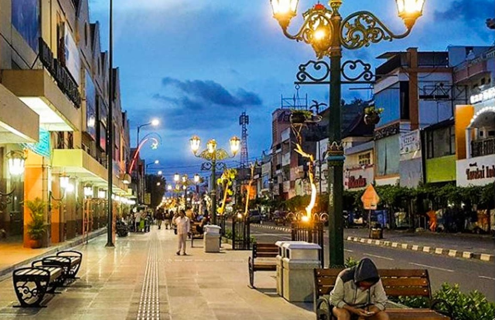
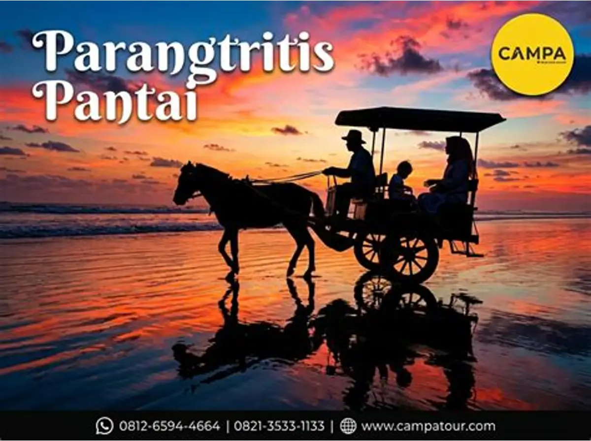

Pilih destinasi untuk melihat informasi lengkapnya.
Kompleks candi Hindu abad ke-9 yang megah dan masuk daftar warisan dunia UNESCO.
Lihat DetailIstana Sultan yang menyimpan koleksi pusaka, seni, dan tradisi Jawa.
Lihat Detail
Ikon kota Yogyakarta, tempat berburu oleh-oleh dan jajanan khas.
Lihat Detail
Pantai selatan yang terkenal dengan ombak besar, sunset, dan gumuk pasir.
Lihat DetailWisata alam dan jeep lava tour di kaki gunung api paling aktif di Indonesia.
Lihat DetailBekas taman istana dengan kolam pemandian dan lorong bawah tanah bersejarah.
Lihat Detail